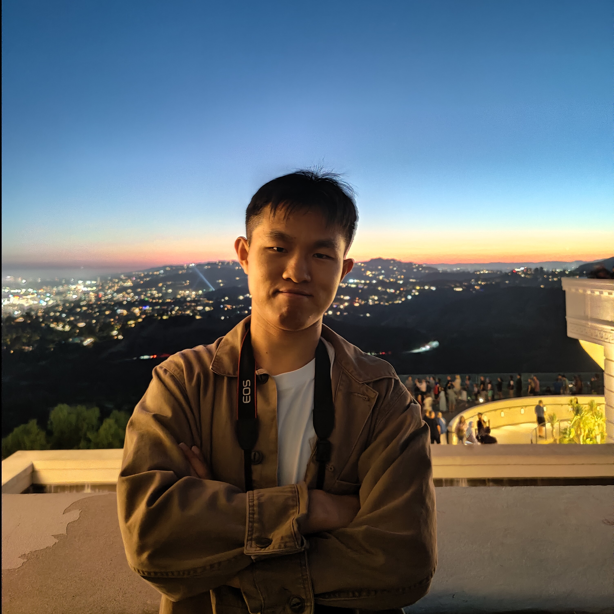

Haodong Li
Doctoral Candidate in Electrical Engineering
University of Massachusetts Lowell · Advisor: Prof. Hengyong Yu
Medical AI · Multimodal Representation Learning · Generative AI · Medical Image Understanding
I develop AI methods for medical imaging and multimodal patient data. My doctoral research has focused on physics-informed generative AI for CT reconstruction, and my current work is expanding toward multimodal representation learning, 3D vision-language grounding, and trustworthy medical AI for disease understanding and clinical decision support.
Research Vision
From physical evidence to multimodal patient evidence. My PhD research asks how generative models can remain grounded in physical measurements for reliable medical image reconstruction. Looking forward, I aim to extend this principle to multimodal medical AI: learning clinically meaningful representations grounded in medical images, clinical text, longitudinal records, and other patient-specific evidence to support trustworthy disease understanding and clinical reasoning.
Research Interests
Multimodal Representation Learning
- Self-supervised and multimodal learning
- Medical foundation models and VLMs
- Imaging + clinical text / EHR
- Longitudinal patient representations
Medical Image Understanding
- 3D vision-language grounding
- Disease and anatomical representations
- Diagnostic and prognostic AI
- Evidence-grounded clinical reasoning
Generative & Physics-Informed Imaging
- Diffusion and transformer models
- CT reconstruction and inverse problems
- Sparse-view / limited-angle / PCCT
- Measurement-consistent generation
Featured Research
CDPIR — Cross-Distribution Diffusion Priors-Driven Iterative Reconstruction
A physics-informed generative reconstruction framework combining diffusion-transformer priors with measurement-consistent iterative reconstruction for robust sparse-view CT under distribution shifts.
Decoupled Posterior Correction for Diffusion-Based Medical Inverse Problems
Developing a physics-aware diffusion inverse framework that separates learned prior formation from measurement-driven posterior correction for severely ill-posed medical reconstruction, including sparse/limited-angle CT and accelerated MRI.
ReXGroundingCT — Multimodal 3D Medical Image Grounding
Developing and fine-tuning multimodal models that connect free-text radiological findings with localized volumetric evidence in 3D CT, with emphasis on representation learning, image-text grounding, and clinically faithful localization.
Multimodal Endoscopy Video-to-Report Generation
Developing hierarchical visual-temporal representations that connect frame-level findings, procedural events, and video-level clinical context for evidence-grounded report generation.
Selected Publications
Education
University of Massachusetts Lowell
Doctoral Candidate (D.Eng.) in Electrical Engineering · Expected May 2027
Advisor: Prof. Hengyong Yu (FIEEE, FAAPM, FAIMBE)
University of Florida
M.S. in Electrical and Computer Engineering · 2023
Xidian University
B.Eng. in Electronic and Information Engineering · 2021